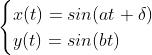

Задача на моделирование №14: Фигуры Лиссажу
M3201. Дудко Матвей
Обновите браузер
Формулы, по которым производятся расчеты:

Параметры уравнений:
Циклическая частота a рад/с: (0 .. any]
Циклическая частота b рад/с: (0 .. any]
Разность фаз δ: [any]
* π